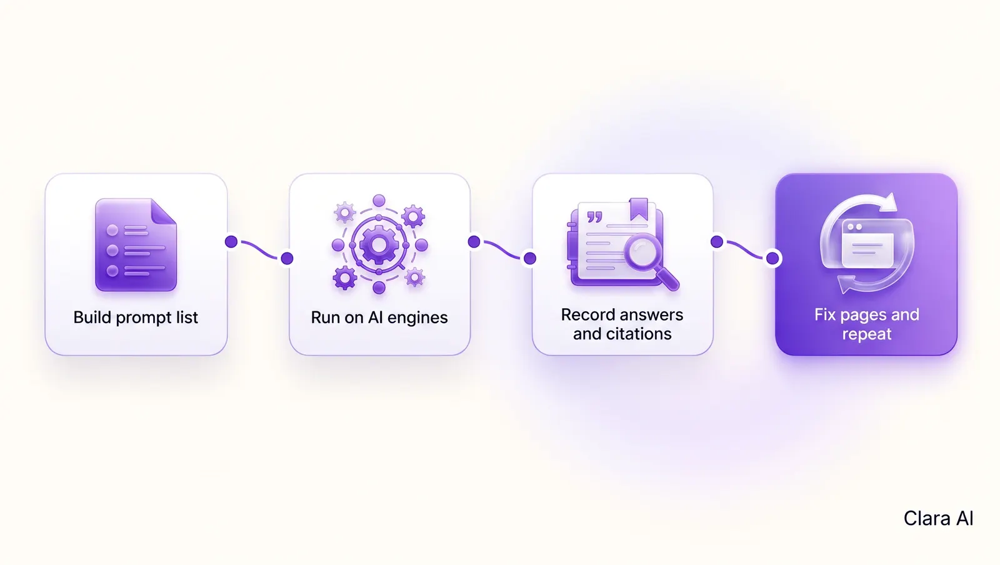

A B2B AI search visibility audit checks whether assistants such as ChatGPT, Gemini and Google's AI answers mention your company when a buyer asks about your category. The method is simple: write the questions your buyers ask, run them on each assistant, record who is mentioned and which pages are cited, then fix the gaps and repeat each month. This checklist gives you every step.
It needs a spreadsheet and a few hours, not a new tool. It makes no promise that an assistant will name you, because no one controls that. What you get is a clear baseline and a list of pages to fix.
Buyers now put long, specific questions to an assistant before they ever visit a vendor's site. "Which AI agent can book sales meetings for a consulting firm?" is a typical one. If the answer lists three competitors and not you, you never entered the shortlist, and your analytics will not show the loss.
Google explains in its guide to AI features and your website that the same foundations apply: helpful, crawlable pages that are indexed and can appear with a supporting link. So an audit is not a separate discipline. It is a way to see how your normal SEO shows up inside AI answers. If the term is new, start with our plain guide to GEO, or generative engine optimization.
The prompt list is the heart of the audit. Write 20 to 30 prompts in the words a buyer would actually type, grouped into four types:
Keep the wording fixed once you start. If you change the prompts every month, you cannot tell whether your visibility moved or your questions did. Mix short and long versions, and add the cities or industries you sell into, since answers often change with context.

Run every prompt on each assistant your buyers are likely to use. For each answer, record the following in your sheet:
Run each prompt more than once if you can. The same question can return a different answer on a second try, so one result is a sample, not a verdict. Record the date every time.
Once the sheet is filled, look for patterns before looking for fixes. Three questions do most of the work:
Sort the gaps by buying intent. A missing answer on "best AI SEO agent for B2B" matters far more than one on a general definition.
Assistants can only cite what they can reach and understand. Add these page-level checks to the same sheet:
Assistants also lean on what others say about you. Check that your company profile, LinkedIn page and any industry directories are accurate and current. Look at where competitors are mentioned that you are not, such as roundups, partner pages and customer stories. For a deeper look at earning those mentions, read how to get cited by ChatGPT for B2B companies.
If your buyers are reached through outbound as well as search, the same facts should match in your messages. Our AI LinkedIn Outreach Agent works from the same approved facts, so what a buyer reads in a message and in an AI answer agrees.
| Finding | Likely cause | Fix |
|---|---|---|
| Not mentioned for a buying prompt | No page answers that question directly | Publish a focused page with a short answer |
| Mentioned, but described wrongly | Old or conflicting pages | Update the page and align profiles |
| Competitor cited, you are not | Their page answers more clearly | Improve structure, add dated proof |
| Your page cited but not indexed well | Indexing or crawl gap | Check Search Console and request indexing |
| Only third-party sources cited | Thin off-site presence | Earn accurate listings and mentions |
Pick the top five fixes by buying intent and do those first. Then rerun the same prompt list next month and compare to the baseline.
Monthly is enough for most B2B teams, with a quick weekly look at your top ten prompts. The audit is easy to start and easy to drop, which is the real risk. Someone must own the sheet, run the prompts and turn gaps into pages.
That is where an agent helps. Our own blog publishes a post every day, and organic sessions rose 28% from 10–25 Oct vs 24 Sep–9 Oct 2026. The full story is in our AI SEO agent case study. A human still decides priorities and approves facts, and the agent does the repeatable publishing and tracking.
It is a fit if you sell to businesses, your buyers research online and you want steady SEO and AI visibility without building a team. It is not a fit if you want a one-off report with no follow-up, or a guaranteed mention. Tell us what you sell and we aim to show you a first demo within 7 days.